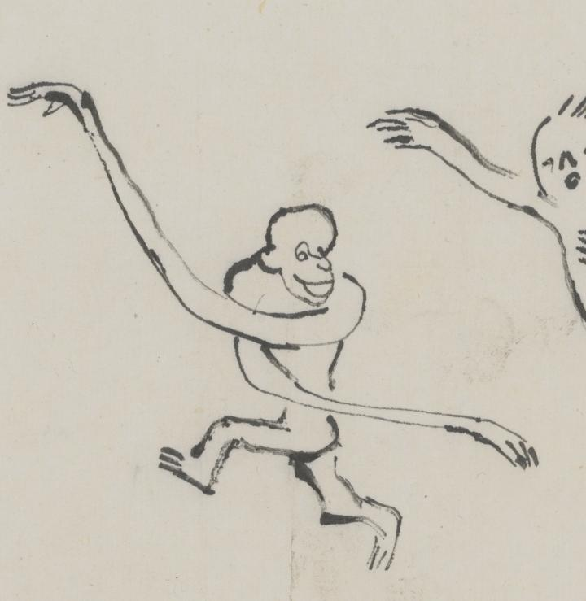

手が長い、手長猿の妖怪。後ろを振り返り、手を交差して笑っている。
著作者：平福百穂／出典：親書誌：U426_nichibunken_0423：百鬼晝行圖；ヒャッキ チュウコウズ／日付：2015／資源識別子：U426_nichibunken_0423_0001_0017
Copyright (c)2010- International Research Center for Japanese Studies, Kyoto, Japan. All rights reserved.